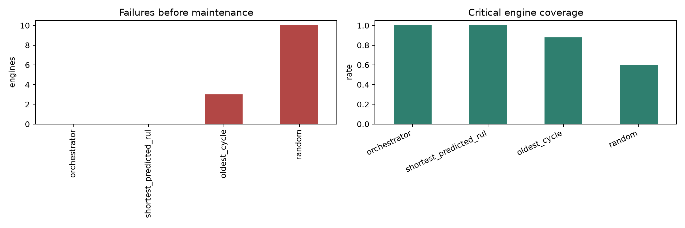
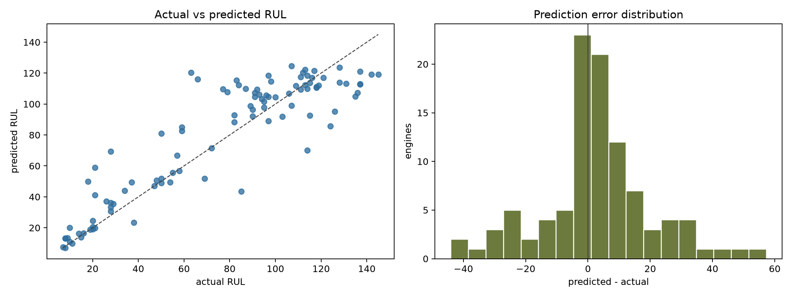
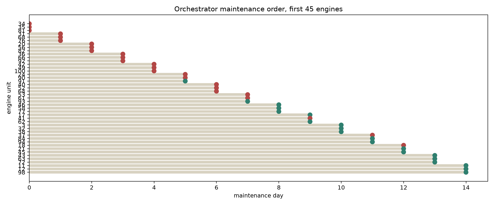

Train rows20,631
Test engines100
Test RMSE18.14
Validation R20.850
정책 비교
| policy | failures | maintained | critical coverage |
|---|---|---|---|
| orchestrator | 0 | 100 | 1.00 |
| shortest_predicted_rul | 0 | 100 | 1.00 |
| oldest_cycle | 3 | 97 | 0.88 |
| random | 10 | 90 | 0.60 |
정책 성능

RUL 예측 진단

오케스트레이터 정비 순서

상위 위험 엔진
| unit | cycle | true RUL | predicted RUL | uncertainty |
|---|---|---|---|---|
| 81 | 213 | 8.0 | 6.9 | 4.2 |
| 34 | 203 | 7.0 | 7.4 | 4.1 |
| 35 | 198 | 11.0 | 9.9 | 4.0 |
| 76 | 205 | 10.0 | 11.1 | 5.4 |
| 31 | 196 | 8.0 | 13.1 | 6.6 |
| 68 | 187 | 8.0 | 13.2 | 6.0 |
| 82 | 162 | 9.0 | 13.4 | 6.0 |
| 56 | 136 | 15.0 | 13.8 | 6.3 |
| 66 | 147 | 14.0 | 16.4 | 5.0 |
| 20 | 184 | 16.0 | 16.6 | 6.7 |